Browser Engine
The browser engine is the core component of Macro Browser, responsible for rendering web content and providing the foundation for all other features. Macro Browser uses a specially configured version of Chromium via the Electron framework.
Architecture Overview

Key Features
De-Googled Chromium
Macro Browser removes Google-specific services and tracking components from the Chromium engine:
- Removed Services: Google authentication, sync, update services, metrics collection
- Disabled APIs: Various Google-specific APIs and integrations
- Alternative Services: Replaced Google services with privacy-respecting alternatives
- Custom User Agent: Modified to reduce fingerprinting potential
Process Isolation
The browser's multi-process architecture enhances security and stability:
- Main Process: Controls application lifecycle and manages browser windows
- Renderer Processes: Isolated processes for rendering web content
- GPU Process: Handles graphics acceleration separately from content
- Network Service: Manages all network connections
- Utility Processes: Handle various tasks like extension execution
Security Enhancements
Additional security features beyond standard Chromium:
- Site Isolation: Each site runs in its own rendering process
- Content Security Policy: Enhanced CSP implementation
- Sandboxing: Strict process sandboxing limits potential exploits
- Memory Protection: ASLR, DEP, and other memory safety features
- Permission Management: Granular control over site permissions
Technical Implementation
Configuration and Setup
// Example of browser window configuration
interface BrowserWindowConfig {
width: number;
height: number;
webPreferences: {
preload: string;
nodeIntegration: boolean;
contextIsolation: boolean;
sandbox: boolean;
webSecurity: boolean;
allowRunningInsecureContent: boolean;
};
backgroundColor: string;
titleBarStyle: string;
autoHideMenuBar: boolean;
}
const defaultWindowConfig: BrowserWindowConfig = {
width: 1200,
height: 800,
webPreferences: {
preload: path.join(__dirname, 'preload.js'),
nodeIntegration: false,
contextIsolation: true,
sandbox: true,
webSecurity: true,
allowRunningInsecureContent: false
},
backgroundColor: '#1a1a1a',
titleBarStyle: 'hiddenInset',
autoHideMenuBar: true
};
Process Communication
The browser uses secure IPC (Inter-Process Communication) between processes:
// Example of IPC communication between processes
// In main process
ipcMain.handle('secure-operation', async (event, args) => {
// Validate sender
if (!isTrustedSender(event.sender)) {
return { error: 'Unauthorized sender' };
}
// Validate input
if (!isValidInput(args)) {
return { error: 'Invalid input' };
}
try {
// Perform operation
const result = await performSecureOperation(args);
return { success: true, data: result };
} catch (error) {
return { success: false, error: error.message };
}
});
// In renderer process (via preload)
contextBridge.exposeInMainWorld('secureAPI', {
performOperation: (args) => ipcRenderer.invoke('secure-operation', args)
});
Content Rendering Pipeline
- Resource Loading: Fetch resources with privacy-enhancing filters
- HTML Parsing: Convert HTML to DOM tree
- Style Calculation: Apply CSS to DOM elements
- Layout: Calculate element positions and sizes
- Paint: Create visual representation of the page
- Composite: Combine layers for final display
Integration with Other Components
The browser engine interfaces with other components through well-defined APIs:
- Privacy Layer: Content filtering and tracking prevention
- Network Layer: Request/response handling and caching
- Web3 Layer: Injection of Web3 providers for dApp support
- UI Layer: Browser chrome and controls
Performance Optimizations
Several optimizations enhance browser performance:
- Resource Prioritization: Critical resources loaded first
- Code Splitting: Breaking JavaScript into manageable chunks
- Lazy Loading: Defer loading of non-essential resources
- GPU Acceleration: Hardware acceleration for rendering
- Memory Management: Efficient handling of memory resources
Future Enhancements
Planned improvements to the browser engine:
- Improved Service Worker Support: Better offline capabilities
- WebAssembly Optimizations: Enhanced WASM performance
- Additional Web Standards: Support for emerging web standards